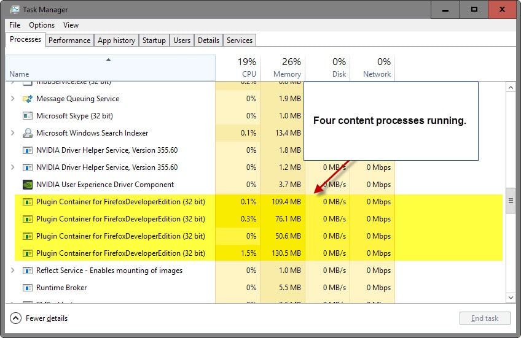
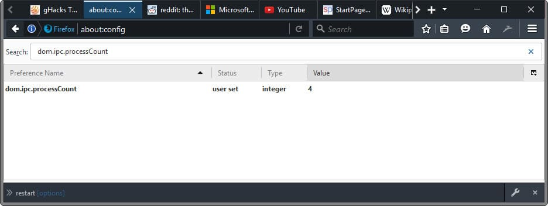

Mozilla will enable its multi-process architecture this year in the Firefox Stable web browser. The organization runs tests currently on Firefox's Beta channel, and provided that those don't result in major stopper bugs, will release the first version of Electrolysis (e10s) when Firefox Stable hits version 46.
This multi-process version won't ship with all features and improvements that Mozilla plans to add to it. There will be only one content process for instance initially with e10s enabled in the Firefox browser.
This means that websites will share that process for their data, which is different to how browsers that are based on Chromium handle this as they launch a new process for every page open in the browser and also for plugins.
Changing Firefox's multi-process content processes
Firefox would not be Firefox if there would not be an option to play around with different content process values.

While Firefox will ship with one content process initially, nothing is keeping users from increasing that limit to use more than one content process.
Each content process is listed as Plugin Container for "Firefox version" in the operating system's task manager. The file name is listed as plugin-container.exe on Windows.
Firefox runs as many content processes as you see listed there, provided that multi-process use is enabled in the browser.
dom.ipc.processCount

It is rather easy to change the number of content processes. Here is how it is done:
- Type about:config in Firefox's address bar and hit enter.
- Confirm you will be careful if a warning appears.
- Search for the preference dom.ipc.processCount.
- Double-click on it and change its value. The default value is 1, indicating that one content process is used.
- Restart Firefox afterwards. Easiest way to do that is Shift-F2, type restart, hit enter.
Firefox will use the selected number of content process after the restart.
Please note that it will use more memory when you increase the number of content processes in multi-process Firefox, and less memory if you reduce the number.
Mozilla ran some memory benchmarks recently and found out that multi-process Firefox will use between 10% to 20% more memory initially with one content process enabled, and about double the memory with 8 content processes.
This is probably one of the main reasons why Mozilla will launch the multi-process architecture with one content process initially.
Ideally, from a stability and security point of view, you'd separate each tab, plugin and the browser UI individually.

> This is probably one of the main reasons why Mozilla will launch the multi-process architecture with one content process initially.
It's maybe one reason but I think the main reason is the fact that there is still work to do. See bug 1207306 and dependencies. There are still bugs and missing features like the support of "view source" with more than one content process.
So with dom.ipc.processCount > 1 you get a more incomplete implementation.
By the way, on OS X the name of the content process is "Nightly Web Content" (or "FirefoxDeveloperEdition Web Content").
Having done so much work at so many levels to get rid of "plugins" ... surely they're not going to allow users to see the ancient "plugin-container.exe" name as the e10s main process name?
That would be rather ugly at best.
Users familiar with the annoying experience of loading your system's task manager to check memory usage or to manually kill yet another hung firefox.exe process ( most users :-( ) will have seen the plugin-container.exe many times. Often it's the cause of issues so many users may have been indirectly trained to associate that naming with painful experiences.
Surely they're going to rename it something more neutral?
Yes, it will be renamed. It's bug 1114647 on Bugzilla.
I wish you were correct but it appears not. I'm using a public stable release and I still see "Plugin Container for Firefox"
I've been waiting for e10s for a loooong time now. And they keep pushing it back. The reason I ditched FF in 2014 and most of 2015 was for 2 main reasons:
1- Website like amazon would bring firefox to it's knees while browsing was ultra-smooth on chrome. I think e10s will solve this one.
2- Once it reached about 900Mb of ram usage, firefox becomes unresponsive. Since I do alot of maintenance on joomla websites , I reach that limit quickly.(joomla admin interface eat up ram fast it seems) Again, chrome was running smoothly when FF wasn't anymore. Strangely, the linux version of FF doesn't have this problem, but my main computer runs windows, so... (64 bits version of FF didn't solve this problem on windows either)
I came back to FF at the end of 2015 because I just felt like chrome was way too invasive with all the google service spying you. So back to FF, with it's problem that are still there after 18 months. Well, back until vivaldi becomes a viable alternative, and I'm pretty sure that will be before e10s ever arrive.(there is only one tiny little thing that isn't working properly yet in vivaldi. Very hopeful it wil be fixed soon as they continue to fix bugs very fast, it's insane!)
For both of your problems, I agree with that Sören Hentzschel said: There is something wrong with your computer.
I run many versions of Firefox (Cyberfox, Waterfox, Firefox 64-bit, Palemoon), I've never encountered Amazon "bring it to it's knees" with any of them. I shop and browse on there constantly. I play YouTube videos while looking at other content, mostly my RAM usage is at around 1GB (I get distracted easily and have a crapload of tabs open lol) per browser.
Vivaldi does look promising tho. I've been using it as a Chrome alternative (but still using Chrome for a specific purpose). It's very fast and smooth. Just can't wait for it to get finalize so I can test out some addons for it.
Just an observation.
Amazon uses an insane amount of scripts (it's a mess of a site with all the adverts and widgets and graphs and links/info on services and tons more "crap"). I regularly use amazon (.com, .de, .fr, .ca, .jp, .uk ). My computer runs at a nice 45-50 degrees - loading an amazon site (vamilla FF with no extensions), and it easily jumps to 65 dgerees, working as hard as heck in the background (another site is following the LPGA live scores, even on Chrome). Maybe its poor JS code. Because basically every other site out there does not do this (mind you I block all XSS JS by default).
- If I allow just amazon.com's scripts, the temp quickly jumped from 47 to 50 (and then back down)
- If I then also allow images-amazon.com scripts it went from 47 to 52 and then slowly down to 47
- If I then allow ssl-images-amazon.com scripts it went from 47 to 54 and then settled at 49
it just gets exponentially worse the more we let through - I'm still blocking a lot of stuff here, including amazon frames, amazon-adsystem, amazonaws, static.amazon, fls-na.amazon, cloudfront-labs.amazonaws, amazonmusiclocal.com etc. Allowing these through just triggers more and more scripts. The site is an absolute resource hog. Imagine how much shit is going on to make the CPU temp jump to 65 and higher.
So I totally understand point 1. Sites like amazon would bring FF to it's knees.
@Pants:
How to spot a computer nerd: See if he (or she?) measures website loading problems in degrees Celsius.
LOL, well done. :) You remind me of... me.
@Jason .... what is with you guys and gals. Tom wanted to know what sex I was too. Look, if you want me to wear a dress, say so. I look really hot in fishnets, can sport a mean mini, and can doll myself up like there's no tomorrow. I have two nipples, too. Your call. Pics on request.
Hey, Pants, don't feel obliged, only if you really feel like it! lol! And don't forget to shave the legs!
I was joking then (still am!) when what I was trying to point out was that it's not obvious to have an idea of someone's sex by his comments only, it becomes easier with time nevertheless, or it may well be immediate if something in the comment was typically male ur female. Also I realize that I'm "naturally" assuming we're all boys on forums unless the ladies make it clear... is it a man's man's world?! Gosh, what would we be without them girls? To start with we wouldn't be here!
Anyway, one's personal life and characteristics is his/her own business and always off-topic unless in meeting spots! I'd add that in languages handling declensions the problem is resolved (unless there is active disinformation!)
The nice thing is that we may consider ourselves as made of spirit only, which is maybe the next step after life here?
P.S. : sorry sorry sorry for being to-ta-lly off-topic :) Back to work. Now! not tomorrow! Sir, yes Sir.
@Pants:
Lol. You're a guy with a goatee and giant biceps, right?
Let me explain my why I wrote what I did earlier. I have been guilty of assuming that everyone with a gender-neutral name in an online forum must inevitably be a man. But one day I was on a tech forum where a woman asked if there were other women present. Despite hundreds of page views over several days, only ONE other woman came forward. That's probably not unusual.
It occurred to me that it would be much more welcoming for the relatively few women in these sites if we all avoided the assumption that everyone is a man. That's why I try to be inclusive in my typed words as much as possible. But I'm sure you look awesome in a mini!
(Sorry for off-topic, Martin!)
About the Amazon issue... I remember this bug (and comment): https://bugzilla.mozilla.org/show_bug.cgi?id=1172205#c10
e10s is not really a solution for your problems because it's not normal that a website like amazon brings Firefox to it's knees, there has to be something wrong on your system. I also never had any problems with a memory usage of 900 MB, that's not that much. Maybe e10s can mask the symptoms but it doesn't sound like a solution for the real problem. You could try to reset your Firefox profile to see if it improves the situation.
Sören, don't be myopic. You can find plenty of comments at reddit, mozillazine, and elsewhere bemoaning "browsing amazon.com brings ff to its knees".
gh, I am the administrator of the German speaking support forum, so I know which problems are common. We don't have such support requests. Also I know that I never had such a problem on any of my computers, neither on Windows nor on OS X. So don't say I am "myopic", just because I know what I know and because *I tried to help*. A profile reset solves a lot of problems.
Many of those same people also state that Chrome is slow on Amazon as well. More than likely a problem in relation to their computers.
One person stated to have found the problem with a javascript being the issue and how both Firefox and Chrome processes it.
I've just spent half an hour moving around with Google Street View, ended with 1.5GB of used RAM, Firefox 64-BIT / Windows 7 64-BIT running fast & smooth as when launched. Disk cache disabled, Mem Cache set to 512MB, not one problem. Concerning Amazon, no idea (I don't shop there) but if the issue is related to RAM only then I imagine I wouldn't have any issue there either.
Forgot to mention that there is a great built-in Firefox tool : "Minimize memory usage" in about:memory, manually or via an dedicated add-on (there are several, I use 'Free Memory Button' developed by Button Guy). Most valuable : after a long session & high RAM usage it frees quite a lot otherwise "stuck" RAM (above example : 1.5GB -> Exit 'Google Street View' -> Clean cache (RAM only here) -> 900MB -> "Minimize memory usage" -> 512MB used RAM, when Firefox here (64-BIT) and 65 add-ons starts at ~350MB) ... so it's a valuable operation.
But this has nothing to do with Electrolysis.
@gh:
It makes no sense to discuss a problem with Sören Hentzschel. He will be right anyway, even when he is wrong. Normal fanboy reaction - don't expect otherwise.
I believe in the existence of your problem. However, amazon.com works fine here. I am using Waterfox 44.0.2, with uBlock Origin (all lists active) and Ghostery (all trackers/all cookies blocked) installed. I highly recommend trying out Waterfox, which will make use of your current Firefox profile. If that doesn't work you should try to reset your profile.
@Appster:
Stop to offend me with every comment and without reason! 1. It is a fact that there are not a lot of such support requests in the German speaking support and you know that I know that because I am part of the support, you are not. 2. I tried to help and that is definitively no reason to offend someone! 3. There are also comments from other people saying the same: they don't have problems on amazon. And you say I am the fanbody and the others not? Really? Wow, that makes sense. Not.
@Sören Hentzschel, I know you're a most honest and advised person. Disagreeing is possible without offending, even when the opponent uses 'uBlock Origin' together with 'Ghostery' :)
Concerning Amazon, this is becoming boring : no one except one user has problems with Firefox on that site and at the same time we should acknowledge the problems are not the ones of his computer and/or his settings, when they definitely are. Some people just don't understand that they can be faulty and not the rest of the world. Pure logic.
"Stop to offend me with every comment and without reason!"
> You are wrong, I am not offending you. You are defending Mozilla everytime a user dares to criticize them. This is what a fanboy would normally does. These are my observations, no more and no less. I give you an obvious example of your behavior:
http://www.camp-firefox.de/forum/viewtopic.php?f=4&t=108235&start=855
There you are trying to defend the dumbest idea Mozilla ever had, called "WebExtensions". Aris, a well-known developer, who is far more important than you are, doubts that WebExtensions will offer the same API set as XUL-based extensions. You can't accept that and try to whitewash the future catastrophe. FANBOY! Sorry, you should just accept the hard truth, Ex-Mozilla-Representative Hentzschel.
"1. It is a fact that there are not a lot of such support requests in the German speaking support and you know that I know that because I am part of the support, you are not."
> And how does that affect the problem of gh? This particular user has a problem which needs to be solved. What happens in the support forum probably is of no concern to him. Let me add that I don't envy your position in the support forum as you will have thousands of support requests in the immediate future. E10S and WebExtensions will most likely cause those...
"2. I tried to help and that is definitively no reason to offend someone!"
> Again, it was no offense, read my text above.
"3. There are also comments from other people saying the same: they don't have problems on amazon. And you say I am the fanbody and the others not? Really? Wow, that makes sense. Not."
> I would be very foolish to call somebody a fanboy if I was not 100% sure of it. In your case I am so sure that I totally vouch for it. Even if the others were fanboys - how would that extenuate your arrogance and ignorance? Wow, that makes sense. Not.
Please don't let this escalate again into a flame war. It is not useful to anyone, so please stay on topic (goes to all involved).
@Appster, offense or not your rhetoric is bothering because you include in your argumentation your consideration of another user, and this consideration be it or not an offense, be it or not a compliment is off-topic : we are not discussing of you, or me, or of anyone else but of the content of an article and of users' comments. You just don't refer to a person's personality, character unless you're in psychology :)
As Martin kindly reminds us, let's stay on topic.
@Tom Hawack:
"Sören Hentzschel, I know you're a most honest and advised person."
> Yeah, sure. Sören is so honest that he, a former Mozilla Representative, wants us to believe that he is a serious and independent commenter on this forum. Why can't the whole Mozilla advertising department comment here, too? Wouldn't make much of a difference.
"Disagreeing is possible without offending"
> Of course, though this would be atypical for a fanboy. As I said, Sören Hentzschel is a fanboy.
"even when the opponent uses 'uBlock Origin' together with 'Ghostery' :)"
> You probably think you are funny, right? You are not. Ghostery and uBlock Origin have quite a different set of functions. The simple users without clue mostly cry the loudest - you are no exception here.
"Concerning Amazon, this is becoming boring : no one except one user has problems with Firefox on that site and at the same time we should acknowledge the problems are not the ones of his computer and/or his settings, when they definitely are."
> I have clearly stated that gh should delete the Firefox profile in order to circumvent user-specific problems. This - IS - a possible solution.
"Some people just don't understand that they can be faulty and not the rest of the world. Pure logic."
> And some simple users just don't understand that they are writing nonsense. You have no clue about the situation of gh's installation and the cause of the issue. If you have nothing to contribute apart from nonsense and arrogance why don't you just shut up?
@Tom Hawack:
You are right here. I have just had my experiences with that guy, though this should of course stay apart from the topic.
@ Martin Brinkmann:
Sure, I agree with you. I really appreciate your articles and the extensive research you put into them. They are very informative and realistic. Though the comment section and one person particularly always enrage me. Sorry for my tone, though the person concerned frequently calls me "liar", too. I'll try to temper myself a little bit in the future when this guy comments again.
And the Appster show continues…
1. If someone is telling lies about me of coure I say that it's not true, because the lies are called defamation.
2. There was no (!) comment from me on this article saying you are a liar, your offenses on this article are without any reason. The only thing I did was trying to help someone.
3. It does not make sense to call me "Mozilla Representative" or "former Mozilla Representative" in every second sentence because it has no meaning. You still don't know what a Rep does and what not. But it has absolutely nothing to with either my blog nor my comments on other websites.
4. Neither Aris is better than me nor I am better than Aris, we both are people like everyone else! Please show a bit respect!
5. I won't discuss the topics XUL, WebExtensions and related things with you as part of the article "Change how many processes multi-process Firefox uses". But you have to live with the fact that your opinion is only your opinion and that other people can have other opinions. Your opinion is just your opinion, not the only truth. And by the way, XUL deprecation and WebExtensions are different topics and you know that. But it's really off topic.
As everyone can see you just use each opportunity to offense me. I don't know your problem and I am not interesting to knowing your problem.
PLEASE, just ignore my comments and it's a better world for everyone!
@Sören Hentzschel:
"And the Appster show continues…"
> I guess, just as your show does.
"1. If someone is telling lies about me of coure I say that it's not true, because the lies are called defamation."
> Defamation? In my opinion, based on what I see of you, you ARE a fanboy. Of course you can tell me you aren't, and I would do so too if I was you (luckily I am not), but that won't change the facts. Unless you prove otherwise I will continue to call you this way, because that is what I see with my own eyes. By the way: Fanboy is a word of rather neutral terminology with an extremely minor negative connotation, while calling somebody a liar is far worse. Remember that when you talk about defamation.
"2. There was no (!) comment from me on this article saying you are a liar, your offenses on this article are without any reason. The only thing I did was trying to help someone."
> Under this article? No. However, you called me that way in the comment section of many other articles. And yet again, I did not offend you. You are the most obvious fanboy I have ever seen and there is no wrong in calling you that way, whether you wanted to help someone or not.
"3. It does not make sense to call me "Mozilla Representative" or "former Mozilla Representative" in every second sentence because it has no meaning. You still don't know what a Rep does and what not. But it has absolutely nothing to with either my blog nor my comments on other websites."
> Are you kidding me? You took part in Mozilla-driven community meetings, yet you want to tell me that you have no ties with them? Is that a joke? If you are not preoccupied - who then?
"4. Neither Aris is better than me nor I am better than Aris, we both are people like everyone else! Please show a bit respect!"
> Well, I don't like you as a person for several reasons. You are a fanboy without manners, calling people liars... But I didn't compare both of you as private persons but as developers. Aris saved my ass and that of many others when Mozilla destroyed the Firefox interface with Australis which you have defended. His CTR extension is very complex and certainly more complex than your Add-Ons. He has more users, too. It is therefore completely reasonable to call him more important than you. Based on your extensions he is likely also a better developer. Yet you are arrogant and try to explain WebExtensions to him. I don't respect you that much on the Internet and I probably wouldn't in real life, yet I have the codex of manners that you lack.
"5. I won't discuss the topics XUL, WebExtensions and related things with you as part of the article "Change how many processes multi-process Firefox uses". But you have to live with the fact that your opinion is only your opinion and that other people can have other opinions. Your opinion is just your opinion, not the only truth. And by the way, XUL deprecation and WebExtensions are different topics and you know that. But it's really off topic."
> I didn't want to start this discussion with you again anyway. I don't hold my opinion in such a high esteem, believe me. My opinion is only my opinion. However, I don't know why a random fanboy always has to criticize and flame around so that I have to answer.
"As everyone can see you just use each opportunity to offense me."
> It gets boring... It was the truth about you. An offense is something entirely different. If you can't live with the truth go away and cry.
"I don't know your problem and I am not interesting to knowing your problem."
> And this is okay. I know what I have to know about you. I know that you are a fanboy and this enrages me. If you want to call this one a problem then you can also guess the cause of it.
"PLEASE, just ignore my comments and it's a better world for everyone!"
> Honestly, I try to ignore them. But your arrogance always drives me to the edge and beyond. If somebody does not agree with your thoughts you don't want to discuss. This is common practice on your own blog, too.
Guys stop. I will delete any further comment that is not on-topic.
@Appster, @Sören Hentzschel, c'mon guys, no big hug required but a handshake welcomed. Then we all go out for a beer, who's offering?!
You do know that this dialog can last forever. Fortunately we're not in the Mid-East and consequences are not dramatic, yet now that the audience has knowledge of your griefs maybe we could return to the bar?
In my opinion and in these circumstances the cleverest one will be he who continues not this sterile dialog.
LOL!
q.e.d.
@Martin:
> Guys stop. I will delete any further comment that is not on-topic
You can delete our last comments as well, not only further comments. The posts of A. and my responses has nothing to do with the topic and has no value for the other readers. :)
What exactly do you do in Amazon in Firefox, for curiosity sake I want to see if I can repeat it? I don't have prime, but I have shopped at Amazon with Firefox and Chrome from time to time, and I noticed that image heavy websites causes jank for both browser, a hitch in the scrolling while they load images, but this is the first time I heard of a Firefox specific issue with the website.
Sorry to say, but there is nothing wrong with my computer(s). The amazon thingy happens on the 3 Windows computers use regularly. All of them went through multiple hardware upgrades, OS reinstall and it happened on Windows 7 and now 10. On fresh installation as much as older running OS. I do nothing special on amazon, I simply browse and buy like everyone else. Even scrolling the front page on the initial load, it already start to stutter, and product pages will eventually take alot more time to display completely, with scrolling being a nightmare, it will even lock up eventually. Since chrome, opera and vivaldi don't have that problem, I always suspected it was because they separates stuff in many process. I never use IE, so I don't know about that one.
Don't think I haven't searched the web for solutions over the years. I found many report of the same, but no solution(beside the usual, start with add-ons disabled, etc. Didn't help)
Number 2 happens 100% of the time when I do admin work on joomla websites. I usually open about 10-12 tabs with the joomla admin interface in each, and when it get close to a Gb of RAM used, FF will start to become unresponsive, locking up for 2-3 seconds at a time. Even windows task manager will report it as not responding. Again, this has happened for 2-3 years, on fresh OS install as much as on older. Maybe it's the javascript, as someone mentionned, no idea.
Btw, I don't expect everyone to have those probs, heck, half the problems people seem to have with FF, I didn't have. Yet, I don't go around saying they don't exist because of that, I'm not a FF dev.(little free jab at them. I remember some bug reports with hundreds of votes that get closed because the dev thinks it must be an add-on that cause the problem, and he doesn't have the prob so he close the bug, or about a missing feature that he think should be added through an add-on, and as such should not be added in the core(and yes, that's the same dev that tells you to remove add-ons... gotta love the irony.)
Totally agree with you (see my comment above). I know you said starting with all addons disabled made no change, but one of the first things I would suggest (no doubt you did this already), is make sure that your Antivirus has "web" protection turned off - from the AV interface options, not just any "plugin" that FF sees. AV web protection is shit, it that interfers with all your web traffic, it is especially bad when it plays MiTM with your HTTPS traffic. Your browsers have built in safe-browsing protection, they have internal sandboxes, and you can also protect your PC in many other ways. AV is about 30th (and last) on a list of things to protect your computer - so turn off the WEB protection part, at least for testing purposes.
Also, I would recommend you try uMatrix. Go grab a portable FF version from http://www.portableaps.com. Go to plugins and make sure any AV and other crap is disabled if it's there). Load amazon, bookmark it, log in (make sure to allow cookies etc) so its a real world scenario for you. Browse around. This is your control test. If we assume you still have issues, then install uMatrix. Go to amazon, pop up the uMatrix panel and play. It's a bit hard to explain how to use uMatrix. The very top left of the grid, when you click on it, allows you to change the "scope" of what you are doing. At amazon.com I have three items in the top left corner, they are *, amazon.com, and http://www.amazon.com. Make sure you select the "amazon.com one". You can click the top (to go green) or bottom (to go red) of a cell to change behavior, you click it again to toggle the setting it on/off. You can click an entire row or column. And then you can refresh the page to see changes, and you can click the padlock or erasure to save the changes permanently. Just have a play.
https://github.com/gorhill/uMatrix/wiki/Very-bare-walkthrough-for-first-time-users
It's really not that hard to work out how to use. The default rules (from the * scope) apply, then the row/column rules (for the domain, eg amazon.com) over-ride those, and then lastly individual cell rules (for the domain) over-ride those. If a cell is pale red or pale green, it's just abiding by the rules for the column/row etc. If it's dark red or dark green, then it's set in stone and no row/column rule or default rule will change it.
You can also go to the uMatrix internal pages and import/export, add/edit rules. So if's it's bit hard, someone can easily give you some text to copy/paste in. You get to the uMatrix internal pages by clicking on the uMatrix grey title bar on the matrix that slides up/down when you click the button on your toolbar.
If anything will pinpoint/fix the problem with amazon's insane amount of JS bullshittery - this is it.
OK, Kin- If it's not the computer then it must be related to your Windows Firefox settings (since no issue on Linux).
How much RAM do you have? Are your caches clean? Have you any particular privacy/security settings, any Adblocker? Since Firefox on Linux runs fine, what settings are different between Firefox/Linux and Firefox/Windows? Any anti-malware handling Firefox connections? Specific plug-ins? How about hardware acceleration, video : checked and OK?
This is just a broad approach, you don't seem to be naive so don't consider my words as fresh, I just don't know the context. But what you describe does seem odd. There's always an explanation.
I remember back on XP having experienced what you describe when my 1GB of RAM was hitting the 90% with a continuous disk swapping, otherwise never experienced such lags. Non magical mystery tour!
You'll find the culprit.
Never had any problems with Amazon on FF, just using AdBlockPlus. The memory usage jumps a bit but nothing else happens worth noting. The "minimize memory usage" in about:memory has never really had any tangible effect on my FF, the only way to reduce memory for me is closing unneeded tabs and/or restart if necessary.
If it stays like that I could live with it.
I have three FF-instances (different profiles) with ~2500 tabs open (yes really), most of them not loaded of course, but with one tab = one process it would completely kill my PC.
Booking.com brings my FF to an almost unusable state. Constant Not responding with 5-10 seconds intervals.Tried booth Ublock origin and ABP.
Is there any indication at this point whether it will be possible to disable e10s after it becomes available?
If it can be disabled, will FF run essentially as it does today, including memory consumption?
You said that initially, with one content process enabled, "websites will share that process for their data." How is the functionality of FF improved by doing that, since, in the current model, as I understand it, all tabs share the FF process, and operate as threads of that process?
Maybe initially, but not in the long run. The Mozilla developers would balk at maintaining non e10 builds. You would better off just using Firefox ESR.
Thanks, Neal.
Please take a look at the second part of my response to Sören to see if I've correctly understood the reason why the "developers would balk."
@Jeff:
"You said that initially, with one content process enabled, "websites will share that process for their data." How is the functionality of FF improved by doing that, since, in the current model, as I understand it, all tabs share the FF process, and operate as threads of that process?"
With e10s and one content process there are still two processes, the content process and the chrome process (Firefox itself), let us ignore the plugin container. Without e10s there is only one process for both, content and chrome. Additionally e10s is a requirement for sandboxing, so that's another improvement brought by e10s, even with only one content process.
@Neal:
> You would better off just using Firefox ESR.
Using Firefox ESR means only to get all the changes at a later date. Firefox ESR 45 won't have e10s enabled so Firefox 45 won't have e10s enabled, too. But there will be a Firefox ESR 52 and Firefox ESR 52 will be based on Firefox 52. So if Firefox 52 won't have an option to disable e10s then also Firefox ESR 52 won't have this option. I don't think that already a plan exists when the option will be removed, but it does not make sense to keep the option forever, that would be a large maintenance burden. And because of that it would make a lot of sense to remove the option with Firefox 52 at the latest, otherwise Mozilla has to maintain the non-e10s code for another year. But it will depend on the progresses in the next months when the option can be removed.
Thanks, Sören.
I can see now that separating the chrome and content processes would have benefits, possibly worth the 10 - 20% extra memory consumption anticipated. However, what would be gained by further separating the content process into multiple content processes?
If I understand your answer to Neal correctly, there is no functional reason why enabling or disabling the separation of content and chrome couldn't be accomplished by a true/false setting in about:config (or somewhere else). However, there is an economic reason: it would require more manpower to maintain two separate code bases--one for FF as it is today, and another for FF when running with e10s enabled. Alternatively, unless additional staff was added, the burden on the current developers would nearly double. That's why Neal said, "the Mozilla developers would balk at maintaining non e10 builds."
Do I have that right?
> However, what would be gained by further separating the content process into multiple content processes?
Let's say the content process crashes. That means that all tabs crash. It's no big deal because Firefox has a session restore feature. But with multiple content processes tabs from other processes should not crash if one content process crashes. And Firefox could be more responsive with more content processes but I can't say for sure because I still use Firefox Nightly with e10s disabled.
> If I understand your answer to Neal correctly, there is no functional reason why enabling or disabling the separation of content and chrome couldn't be accomplished by a true/false setting in about:config (or somewhere else). However, there is an economic reason: it would require more manpower to maintain two separate code bases--one for FF as it is today, and another for FF when running with e10s enabled.
That's correct. And it would probably require a lot of manpower because e10s is not only a new feature, it's a new architecture and it affects almost every part of Firefox.
Thanks for your input, Sören. I think I know as much as I need to know at this point.
Unfortunately, I come away feeling like this, like the Australis "improvements," is a losing proposition for me, although I represent a super-small minority of users.
For those of us who don't want to, or can't afford to, get a new computer, the 3 GB effective RAM limit for 32-bit Windows means that a large FF memory footprint impacts all operations on the system. Therefore, even the anticipated best-case expectation for increased memory means trouble for me.
That won't be the case for most users, with 64-bit Windows, lots of memory, and very fast processors. FF has to design with their base, and for the base that will exist in the future--and I'm not it.
The only reason FF is my browser of choice is the tab management features offered by TabMixPlus, particularly displaying open tabs in multiple rows. In turn, that's important because I usually have hundreds of tabs open at once when doing research. FF becomes slow to load at that point, but that's not a problem because I simply launch it at the start of the day, and walk away to fix breakfast while everything loads.
I've used Sandboxie for years, so that sandboxing feature will bring nothing to me.
The probable stability improvements seem like an answer to a question that is seldom asked. It's hard to remember when the contents of a tab have caused FF to crash for me.
Finally, any gains in "responsiveness" seem like they will be, at best, likely to be measurable, but not noticeable. Even with my system, the basic operation of opening a page is now totally dependent on the speed of my internet connection--so long as I run an ad-blocker and Flash blocker. The only pages that are currently slow to load are those using lots of those elements.
However, although I can't test this hypothesis on my own machine, when I've used other people's computers, which had 6 - 8 GB of RAM, and a faster processor, it seemed like I'd hardly ever notice lag when I opened any page, even without any blocking add-ons installed.
At any rate, I'll stay with ESR as long as possible, and see what the situation is like when those builds begin to require operating with e10s. My hope is that, at that point, Pale Moon or other forks will continue to offer today's functionality to those of us for whom the "latest and greatest" is often the "latest and worse."
Thanks again.
Has anyone tested the best number for the setting on their computer? Should I try with the number 8 setting mentioned in the article?